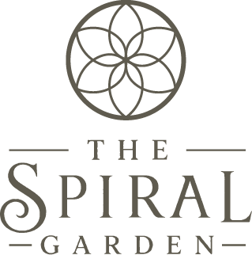

The Spiral Garden is a collection of tools and accessories mainly for gardening but the product line doesn't end outdoors.
Copper has been used for centuries in water systems and vessels and is valued for its durability, natural antimicrobial properties, the inhibition or destruction of many harmful microorganisms, bacteria, fungi and viruses as well as its long-standing association with traditional wellness practices.
Copper is also frequently incorporated into contemporary gardening practices that explore ideas surrounding conductivity, energy flow, and the relationship between natural materials and living systems. While perspectives and experiences vary, these concepts continue to inspire curiosity and experimentation within the gardening community. We approach these traditions with an open mind and a deep respect for nature. We make no claims beyond the quality of our products and the craftsmanship behind them. Instead, we celebrate the beauty of copper, the wonder of growing things, and the countless ways gardeners choose to engage with the natural world.
Whether you're cultivating vegetables, creating a pollinator sanctuary, designing a peaceful outdoor retreat, or simply exploring new ideas in the garden, our goal is to provide thoughtfully crafted copper accessories that bring both function and inspiration to your growing space.
The garden is a place of healing, relaxation, observation, discovery, and possibility. We're honored to be part of that journey with you.